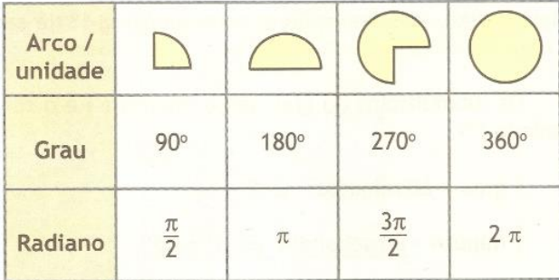

Arco de uma circunferência é, de uma maneira mais formal, uma parte do comprimento de uma circunferência que é delimitado por dois pontos quaisquer que pertence à circunferência.
O arco 𝐴𝐵̂ vai do ponto A ao ponto B
no sentido anti-horário.
Todo arco tem um ângulo central
associado.
AOB = ângulo interno
Para cada arco pode ser associado um comprimento e ângulo
As unidades mais usadas para medir os ângulos dos arcos de circunferências são o grau e o radiano.
Relação entre eles :
Exemplo :
Caso o ângulo central seja dado em radianos, utilizamos a seguinte expressão: ℓ = α * r.
Determine o comprimento de um arco com ângulo central igual a 30º contido numa circunferência de raio 2 cm.
ℓ = α * π * r / 180º
ℓ = 30º * 3,14 * 2 / 180º
ℓ = 188,40 / 180
ℓ = 1,05 cm"
O comprimento do arco será de 1,05 centímetros.
Nesse Item eu tive uma pequena dificuldade, porque foi complicado achar uma questão facil de calcular e que eu conseguisse realmente resolver e ter certeza que está certo, então este conteúdo é um pouco dificil.